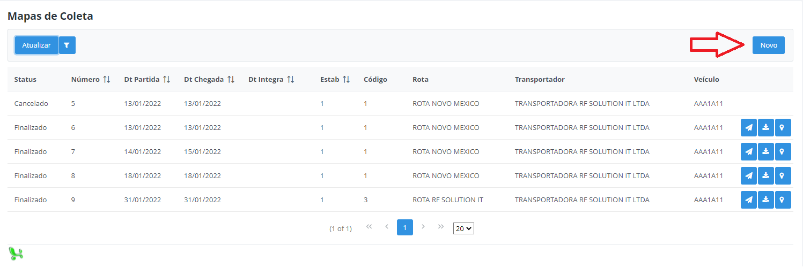
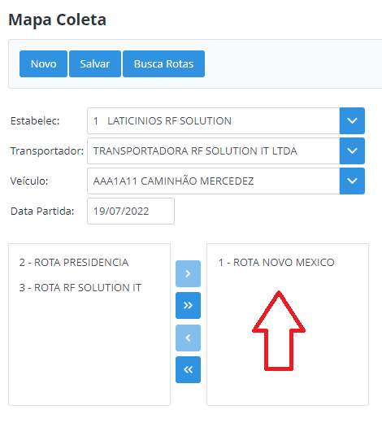
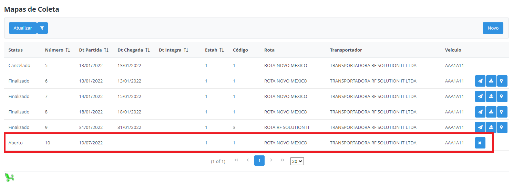
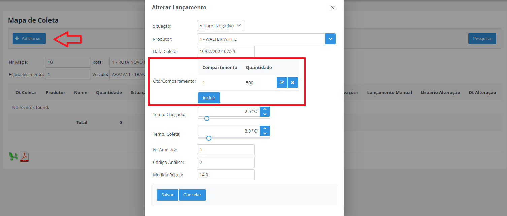
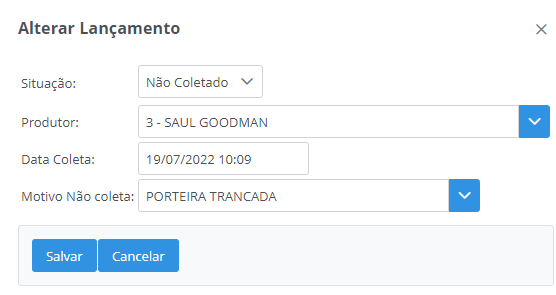
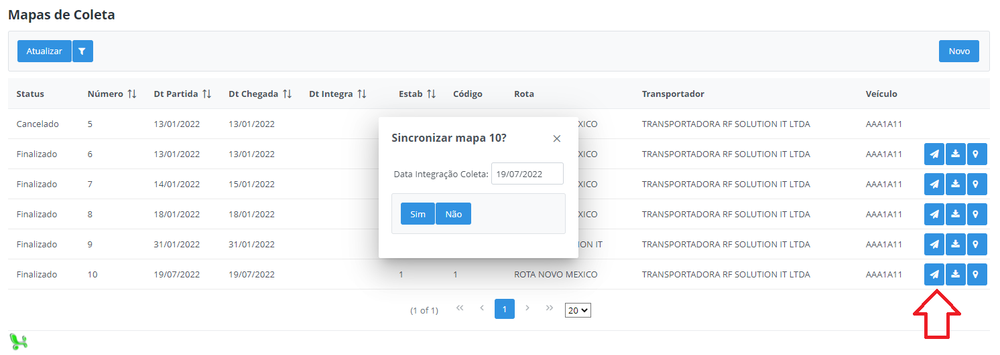

Processo Lançamento Manual
Neste tópico será detalhado como realizar um lançamento manual completo pelo Milkroute Web, sem utilizar o aplicativo mobile.
Passo 1:
Acesse a opção no Menu - Tarefas - Cadastro Mapa Coleta e clique no botão "Novo":

Selecione os campos estabelecimento, transportador, veículo e a data de partida desejada, em seguida, clique no botão Buscar Rotas, serão disponibilizados todas as rotas do veículo selecionado.

Selecione a rota desejada e arraste para a direita, na sequência clique em Salvar. O mapa ficará disponível na lista com o status Aberto.

Feito isso, acesse a opção no Menu - Tarefas - Alterar Mapa Coleta, localize o mapa criado manualmente e clique na primeira opção Alterar Status Mapa, altere o status para Finalizado e preencha os demais campos conforme necessário.

Importante: Somente será disponível realizar os lançamentos dos produtores com o status do mapa Finalizado.
Após alterar o status, clique na opção em formato de lápis "Alterar Lançamentos". Em seguida, clique em "Adicionar", será aberto uma nova janela com as mesmas opções do aplicativo mobile para lançamento da coleta do produtor.

Selecione o produtor e a quantidade coletada deve ser lançada na opção Qtd/Compartimento, destacada na imagem acima, preencha todos os demais campos. Nesta janela, também é possível realizar um lançamento com a situação Não Coletado, selecione também o motivo da não coleta.

Feito o lançamentos de todos os produtores, volte ao Menu - Tarefas - Cadastro Mapa Coleta e sincronize o mapa.
